Nyzo version 567 (commit on GitHub) adds storage of nicknames and entry-vote states as on-chain metadata.
This version affects the behavior of the verifier only.
This update adds functionality to store, on the blockchain, metadata regarding the state of Nyzo. It is intended to improve the decentralization and democratization of Nyzo by reducing disparities in knowledge about the state of Nyzo.
A fair, effective entrance process is essential to the integrity of Nyzo. This version stores the identifier of the top-voted new verifier on the blockchain. This will build a trusted, verifiable record to allow for auditing of the entrance process.
This version also stores verifier nicknames on the blockchain. While nicknames play no functional role in Nyzo, they are useful for user interfaces.
In BalanceList, the Comparator used for sorting BalanceListItem objects was moved to a static field so that it could be reused for a binary search of the sorted list.
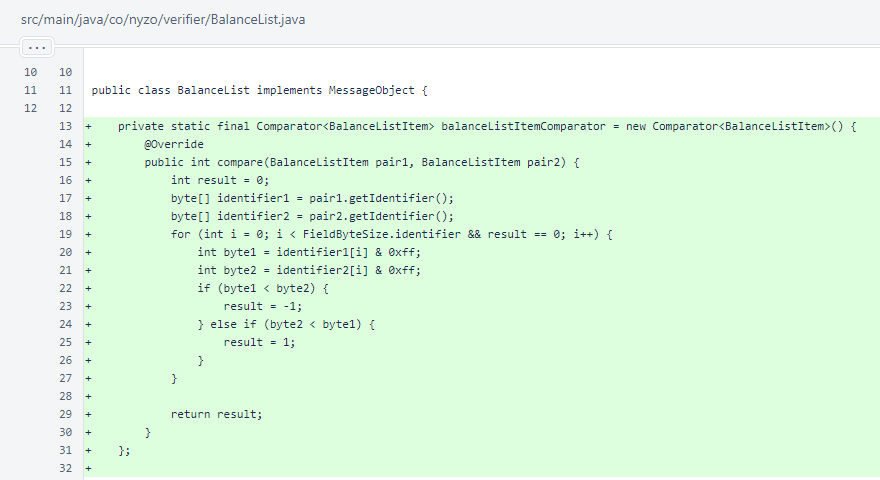In BalanceList.normalize(), the inline Comparator has been replaced with the Comparator defined at the top of the class. The internal logic of the old and new objects is identical, letter-for-letter, and the behavior is unchanged.
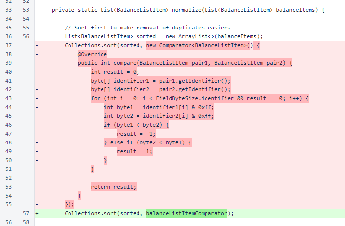The BalanceList.balanceForIdentifier() method performs a binary search on the items in the balance list to efficiently provide the balance for a single identifier.

In BlockManager.setFrozenEdge(), blocks are now registered with the MetadataManager.
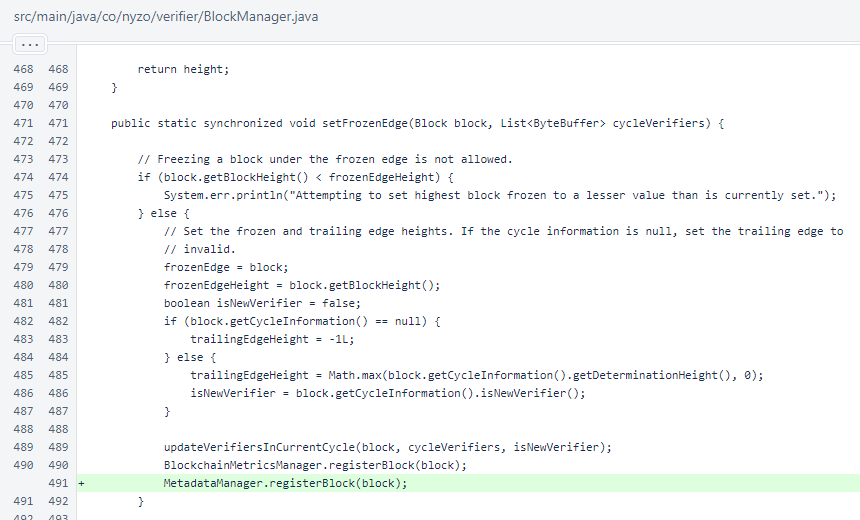MetadataItem is a simple encapsulation of the information contained in a metadata transaction. The timestamp field is the transaction timestamp. The key field is from the first part of the transaction's sender-data field. The senderIdentifier field is sender of the metadata transaction, which is also the verifier of the block. The senderDataValue field is any data stored in the sender-data field past the meta-key: prefix. The receiverIdentifier field is the receiverIdentifier of the transaction. This is used as an extra data field for metadata transactions.
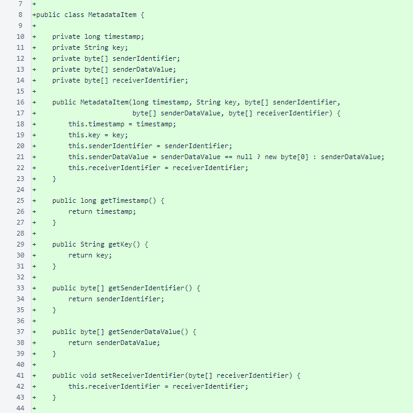MetadataItem.fromTransaction() creates a MetadataItem object to represent the provided transaction. The comments explain the requirements of a metadata transaction. If the transaction is not a valid metadata transaction, a result of null is returned.

MetadataItem.generateTransaction() is roughly the inverse of the fromTransaction() method. As the transaction must be signed, the senderIdentifier of the MetadataItem must match the identifier used by the Verifier class.
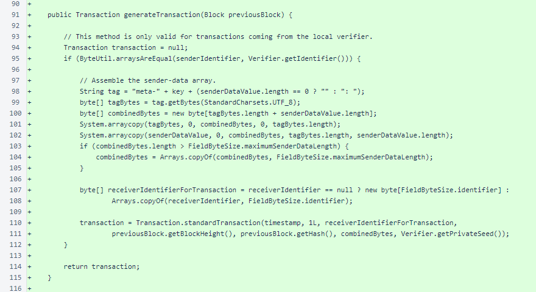The MetadataItem.toString() method displays the timestamp, key, and compact representations of the three byte[] fields of the object.
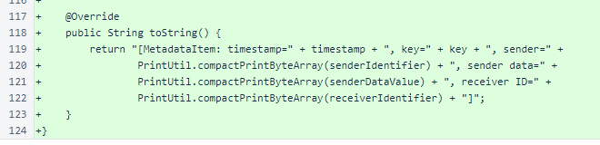MetadataManager handles creation and processing of metadata transactions. As the comment notes, creation of metadata transactions is voluntary, but it is active by default. To deactivate creation of metadata transactions on a verifier, place the following line in /var/lib/nyzo/production/preferences:
verifier_add_metadata_transactions=0
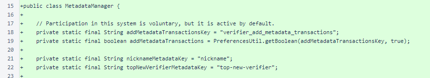The MetadataManager.metadataTransaction() method makes transactions for any metadata that this verifier wants to update. A check is performed to ensure the verifier has sufficient funds to create transactions.
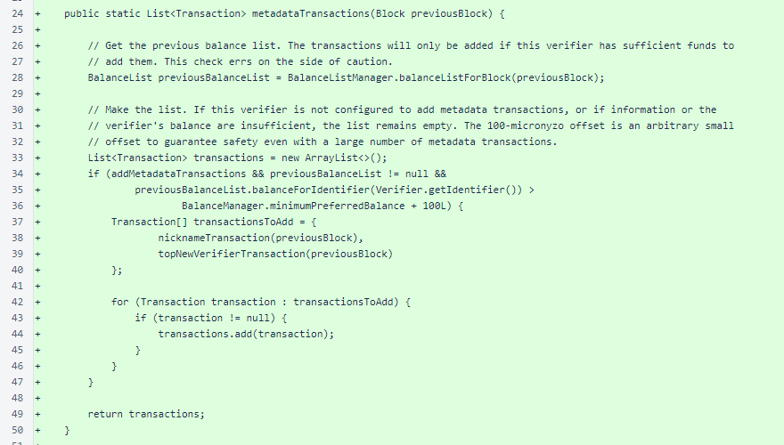MeshListener.registerBlock() method processes metadata transactions in blocks as they are set as the frozen edge. In addition to the checks on a transaction that are performed when extracting a MetadataItem, metadata is only processed when the transaction is provided by the block verifier.
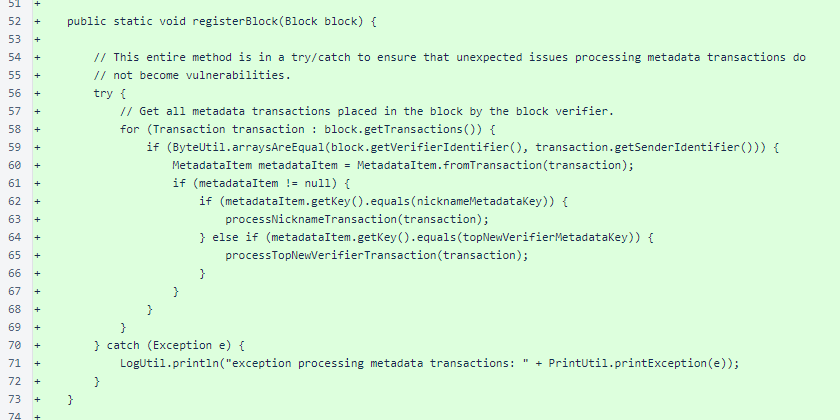The MetadataManager.nicknameTransaction() method produces a metadata transaction with the verifier's nickname if the local nickname does not match the latest nickname for the verifier stored on the blockchain.

The MetadataManager.processNicknameTransaction() method is used by the registerBlock() method to handle any nickname metadata transactions that are encountered.
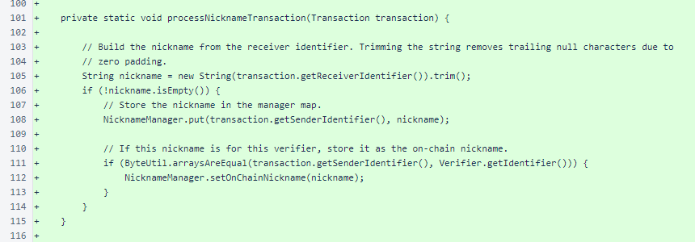The MetadataManager.topNewVerifierTransaction() method produces a metadata transaction with the identifier of the top-voted verifier if the local entry for the top-voted verifier does not match the latest top-voted verifier stored on the blockchain. This metadata transaction is added regardless of whether or not the cycle is accepting new verifiers. So, this metadata placement should quickly provide substantial insight into the quality of the new-verifier voting process.
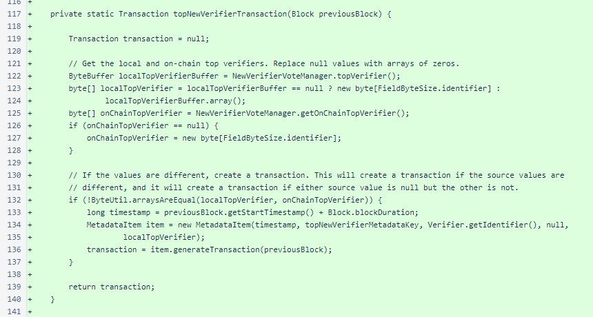MetadataManager.processTopNewVerifierTransaction() is used by the registerBlock() method to handle any top-new-verifier metadata transactions that are encountered.

The onChainTopVerifier field was added to NewVerifierVoteManager to track the top new verifier according to blockchain metadata. When the local value differs from the on-chain value, due to either a change in voting window or disagreement, this verifier produces a new metadata transaction to update the on-chain value.
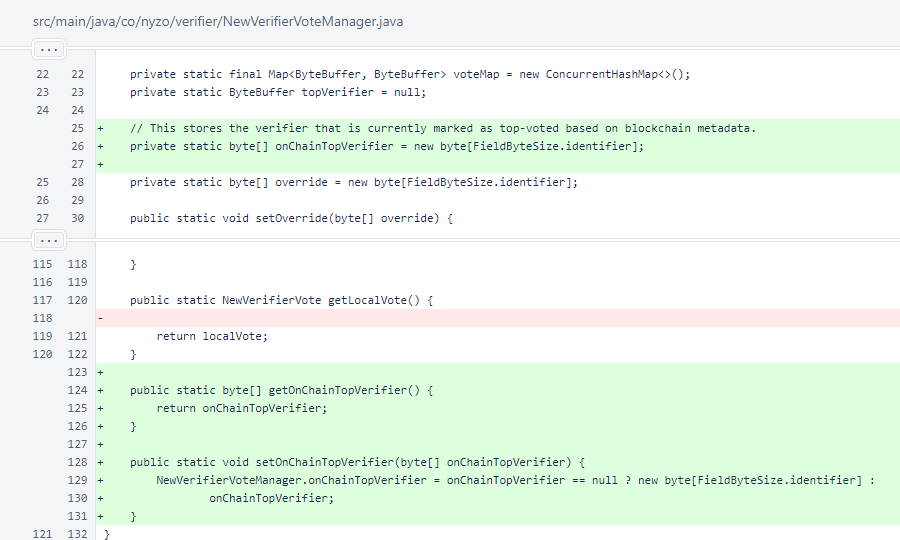In NicknameManager, localNickname and onChainNickname were added to determine when a new nickname metadata transaction needs to be submitted. If a verifier is restarted and its latest nickname metadata transaction is behind the retention edge, a new transaction will be submitted.
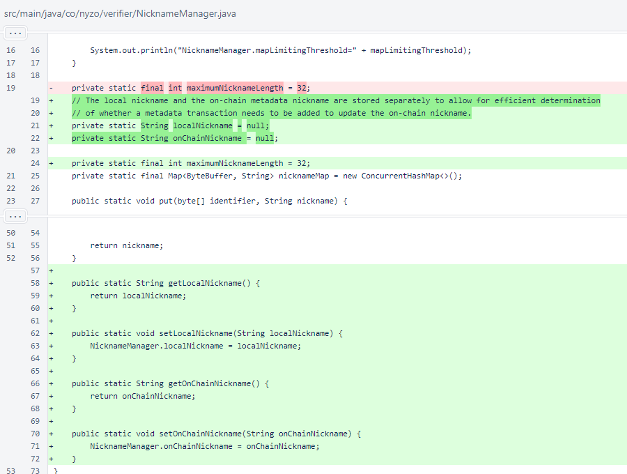In Verifier.createNextBlock(), metadata transactions are now added as the transaction list is being assembled. This happens before BalanceManager.approvedTransactionsForBlock() is called, so these transactions are subject to the same standards as any other transactions built into the block.
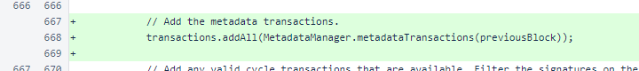In Verifier.loadNickname(), the nickname is now stored additionally in the localNickname field of NicknameManager.
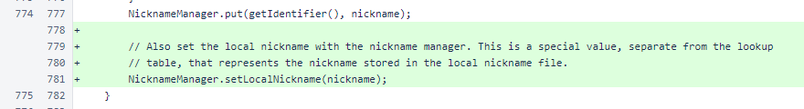A method was added to provide access to the verifier's privateSeed. While this seed was already indirectly accessible through the sign() method, exposing the seed directly allows the MetadataItem class to build transactions more efficiently.
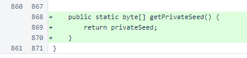